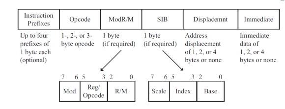

Context
As someone that doesn’t have a CS background I’ve always wanted to properly understand how things work at the lower level, and had decided to put more effort into it.
As part of my learning path I got the book Programming from the Ground Up but hadn’t started yet, until I had an 11 hours flight to Brazil, and it felt like a good opportunity to start.
I really liked the book, but it turns out the examples were written in Linux
x86 GNU assembly, and I was on a Mac OS X 64 bits… I struggled a little bit
bit between assembler and linker flags and syntax between i386 and x86_64
but couldn’t figure it without internet…
(it turns out that for i386 the return value for the exit syscall had to go
into the stack instead of into %ebx, for x86_64 the syscall numbers have an
offset of 0x2000000, different registers and you have to use syscall instead
of int $0x80… all these things are not very easy when you’re first starting
with assembly)
I tried leaving it aside, but couldn’t stop thinking about it, so I started writing a very dummy x86 parser, that was enough for the exercises I got to do before running out of battery (nothing worse on a flight than no sockets).
A couple months later we’d have a hackathon at Facebook, on the Chelsea stadium, and I thought it’d be cool to implement an x86 emulator, to understand how to actually execute a binary.
Convincing people to work on this project wasn’t very easy either, and it took
me some time to prove that I wasn’t crazy, that I had a reasonable idea of how
hard it’d be to write a proper emulator, and to explain that I only wanted to
write it for fun and support only very basic use cases. But at the end I got
Uri Baghin to join me.
Our Goal
Our initial goal was to run the simplest x86 program possible: just exit with
code 0:
# program.s
.section __TEXT,__text
.globl start
start:
mov $0x1, %eax
push $0x0
call _syscall
_syscall:
int $0x80Here’s how to build the above program in a Mac OS X:
$ as -static -arch i386 -o program.o program.s
$ ld -static -arch i386 -o program program.oAnd to test it, you can execute it and check the exit code with the following commands:
$ ./program
$ echo $?So, we decided to split the problem in two: Finding the actual assembly instructions in the binary and executing them.
Mach-O Binary Format
The binary contains more than just the assembly code, it contains information about it’s layout, architecture support, how it should be loaded into memory and symbols present in the binary:

Note: To have a better visualisation of the binary layout I recommend using MachOView, it’s super helpful when investigating the binary itself.
In order to find the assembly code inside the binary we need to read the load
commands, more specifically the LC_SEGMENT commands, they have information
about how to map the binary segments to virtual memory.
The LC_SEGMENT load commands have a few fields
- Command (
LC_SEGMENTin this case) - Command Size
- Segment Name (e.g. __TEXT)
- VM Address (Location into virtual memory where segment should be copied)
- VM Size (Size of virtual memory the segment will use)
- File Offset (Location of the segment in the binary)
- File Size (Size of segment in the binary)
- Maximum VM Protection (Maximum protection level allowed for the VM)
- Initial VM Protetction (Initial protection level for the VM)
- Number of Sections (Number of sections contained in the segment)
- Flags (The possible flags can be found in
mach-o/loader.h
right after the
struct segment_command)
But we can ignore the VM protection and flags for now, and just copy the
contents of the binary from File Offset to File Offset + File Size into
virtual memory (implemented as a simple ArrayBuffer in this case) from VM Address to VM Address + VM Size.
Next thing we need the LC_UNIXTHREAD load command. It tells us the initial
execution state of the main thread of the program.
The important bit here for us is the initial value of %eip (the instruction
pointer), it tells the position in virtual memory of the first program
instruction, i.e. where the actual code starts (note: in the sample code we
are using a global variable called PC instead of simulating a register).
Binary Execution
OK, so now we have the program code mapped to virtual memory, and a pointer to
the beginning of the code, we just need to execute it. One thing that makes
it more fun is that x86 has variable size instructions, so we have to read the
opcode first in order to know how many bytes does it take.

In order to Keep It Simple™ I disassembled the generated binary with objdump,
a CLI that can be installed with the binutils package. It should look like:
$ brew install binutils # if you don't have it installed yet
$ gobjdump -d program
Disassembly of section .text:
00001ff2 <start>:
1ff2: b8 01 00 00 00 mov $0x1,%eax
1ff7: 6a 00 push $0x0
1ff9: e8 00 00 00 00 call 1ffe <_syscall>
00001ffe <_syscall>:
1ffe: cd 80 int $0x80Since I didn’t intend to implement a fully functional emulator, I just looked for what was the syntax for the necessary opcodes, a good reference for x86 can be found at http://ref.x86asm.net/coder.html.
I created a map (the implementation was really a plain JavaScript object) from opcodes to functions. The functions would be responsible to read more data if needed by the opcode, e.g:
var Functions = {};
Functions[0x6a] = function () {
// Push one byte
push(read(1));
};If the opcode is in fact an opcode prefix, then we have to read the next byte, the actual opcode:
var Fn0x0f = {
// jge
0x8d: function () {
var dist = read(4);
if (!NG) {
PC += dist;
}
},
// ...
};
Functions[0x0f] = function () {
// Call the actual function inside the prefix
var fn = read(1);
Fn0x0f[fn]();
};The last thing we have to deal with are syscalls, we have to actually simulate it, so we have another map from sycall numbers to functions:
var Syscalls = {};
Syscalls[0x01] = function () {
// Fake exit, since there's no OS
console.log('Program returned %s', Stack[Registers[ESP + 1]]);
PC = -1; // Mark the program as ended by setting the program counter to -1
};In order to load the binary, we used the File
API. A html page is the
entry point, with a single input to drop the binary and the output shows up in
the console.
Sample Code
The resulting code of the hackathon can be found in this
gist, contains 3
files as described: the loader (mach-o.js), the opcodes’ logic (x86.js) and
the index.html that works as the entry point. The code can execute basic
assembly and C programs.
NOTE: it cannot execute libc, so C programs have to be compiled with
-static -nostdlib and provide a custom assembly boostrap.
Please keep in mind that the code is super simple, was completely written in a hackathon, so there wasn’t much effort into making it very readable (or very good for that matter) and we didn’t iterate any further on that.
It was enough to run fibonacci(40) written in C compiled with clang -O3
which took incredible 9m47s.
EDIT: After reading this
comment on HackerNews I
replaced DataView with Uint8Array, and fibonacci(40) is now down to a much
better 1m53s, making it faster than perl and ruby 1.8 according to this
comparison :)